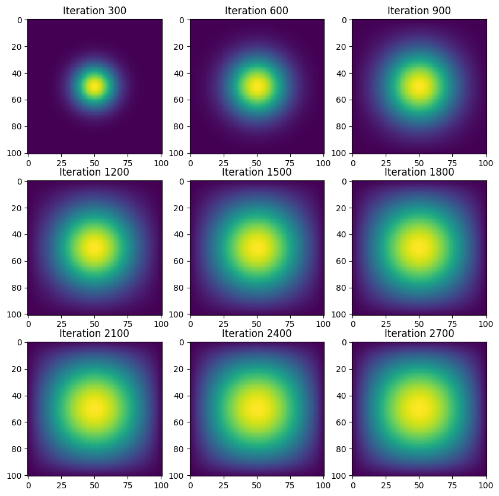
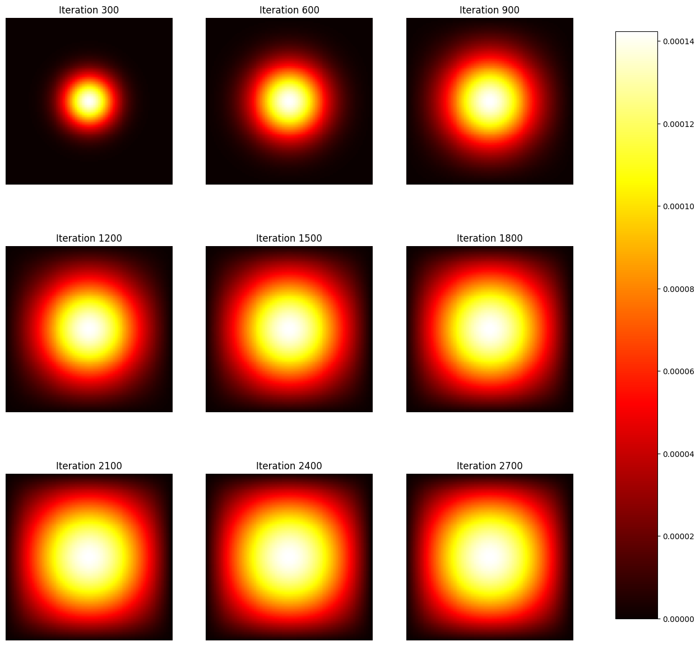
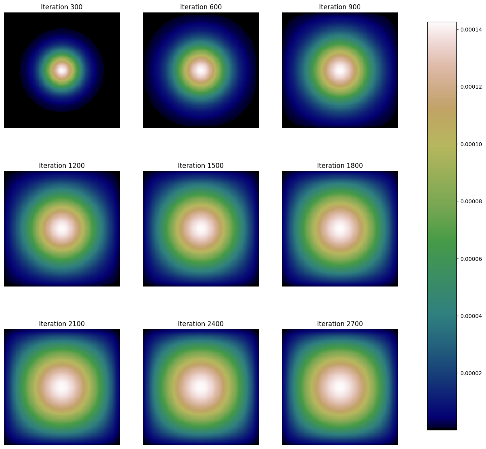
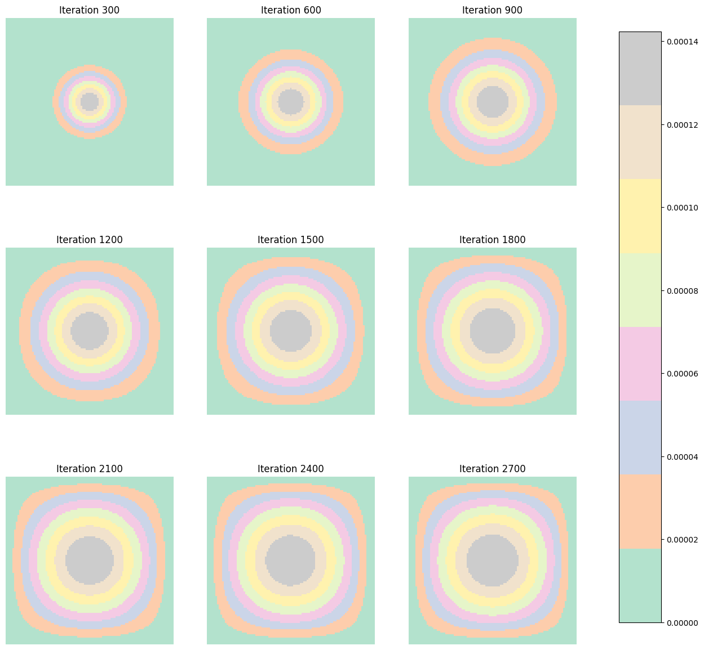

N = 101
epsilon = 0.2HW 4: Heat Diffusion
In this blog we will create a simulation of two-dimensional heat diffusion. Below I will present four diffrent methods that can be uses to compute matrixs and create the heat difussions. This involves more math than past blogs but it will still be fun so lets get into it!
Set Up
Below we set up and intalizes our N and epsilon variables as well as set up the main conditions for the heat difussion starting with the point in the middle
N represents the size of the gride as well as the number of points that we will have on the dimension that the simulation is run on. Since we are working on a 2D gride the N gride will be N x N. The larger the vlaue of N is , the finer the gride will be. For this blog we will set up the N value to be 101
Epsilon is the parameter that represents the stability constant or time step size in the simulation. Since we are working with heat difussion it can also be used to represent a scaling factor for the diffusion rate (this impacts the spead). Here we set the epsilon to be 0.2
Below we imported some of the main packages we will need to use to both measure the time each method took and to present the heat difussion. we also constructed a gride with the initial condition to use as a starting point.
import time #so I could caluclate the time each method took
import numpy as np
from matplotlib import pyplot as plt
# construct initial condition: 1 unit of heat at midpoint.
u0 = np.zeros((N, N))
u0[int(N/2), int(N/2)] = 1.0
plt.imshow(u0)<matplotlib.image.AxesImage at 0x7ec2cd0da6e0>
Now that we have the basic things estblished we are ready to dive into the first method, creating heat difussion with matrix multiplication.
Part 1: With matrix multiplication
To start off we will need to constract a matrix A that represents the discrete Laplacian operator in a two-dimensional grid for solving partial differential equations (PDEs) like the heat equation, and a function advance_time_matvecmul that advances the simulation of heat diffusion (or a similar process) by one timestep.
Lets’ dive into each part:
Construction of matrix ‘A’: function get_A
The code below works by calculating the total number of points in a gride size of NxN. The diagonals section initializes arrays to represent the diagonals of the matrix A.
The main diagonal (-4 * np.ones(n)) corresponds to the finite difference approximation of the Laplace operator in 2D
The next two arrays (np.ones(n-1)) represent the immediate left and right neighbors in the grid (horizontal connections).
The last two arrays (np.ones(n-N)) represent the top and bottom neighbors (vertical connections).
The last line combines these diagonals into the matrix A, using np.diag to place each array into the specified diagonal of a matrix. This creats a sparse matrix representation of the Laplace operator. This part is the is central to simulating diffusion-like processes and will come in handy in future methods.
import numpy as py
def get_A(N):
n = N * N
diagonals = [-4 * np.ones(n), np.ones(n-1), np.ones(n-1), np.ones(n-N), np.ones(n-N)]
diagonals[1][(N-1)::N] = 0
diagonals[2][(N-1)::N] = 0
A = np.diag(diagonals[0]) + np.diag(diagonals[1], 1) + np.diag(diagonals[2], -1) + np.diag(diagonals[3], N) + np.diag(diagonals[4], -N)
return A
Advance _time_matvecmul function
This function creats a one timestep of a process like heat diffusion across a two-dimensional grid. It uses matrix-vector multiplication to apply the discrete Laplace operator to the grid state.
The function works by inputing the matrix A we previously created, u which is our grid- a 2D array where each element represents the temperature at each point, and lastly our epsilon. We first start by flatting our gride into a vector so it would match our dimensionsexpected by A for matrix-vector multiplication.
Once we have done that the A @ u.flatten() applies the discrete Laplace operator to the grid state, simulating the diffusion effect. Once it is done the gride getsr eshaped back into a 2D array (N x N) and added to the original state u, resulting in the new grid state.
# this function advances the simulation by one timestep using matrix-vector multiplication
import numpy as np
import jax
import jax.numpy as jnp
from jax import jit
from jax.experimental.sparse import BCOO
@jax.jit
def advance_time_matvecmul(A, u, epsilon):
"""Advances the simulation by one timestep, via matrix-vector multiplication
Args:
A: The 2d finite difference matrix, N^2 x N^2.
u: N x N grid state at timestep k.
epsilon: stability constant.
Returns:
N x N Grid state at timestep k+1.
"""
N = u.shape[0]
u = u + epsilon * (A @ u.flatten()).reshape((N, N))
return u
Visualization
Now that we created out two functions we are finally ready to start visualizing our heat difussion maps.
Set up before visualization
Before we can start using pyplot we need to creat snapshots of the gride state every 300 iteration to make it easier to graph.
We start by intializing the Gride state and Parameters
we use u0 for the gride state to use the intial state we created at the begining of the blog post. We also make sure to use the epsilon and N parameters that we established at the begining
Then we construct the Laplace Operator Matrix A
here we call our get_A function to get our A matrix #### lastly, we run the simulation We created a loop following i to iterate 2700 times. Each time we iterate it represents a timestep in the simulation. It is importnat that we make sure to also update the gride state to represents the new iteration. We can update the gride by applying the matrix A to the current state u through the function advance_time_matvecmul. For the last part of this section, it is important that we store the intermediate solutions. Since 2700 is a lot of iterations we only want to keep track of every 300 iterations starting at 300 which we indicated in our if loop. We then append the iteration to our list ” solutions1 and we are now finally ready to start making cool heat difussions !!!
# Initialize your grid state 'u' and stability constant 'epsilon'
u = u0 # initial grid state
epsilon = 0.2 # stability constant
N = 101
# Get the matrix A using the function get_A(N)
A = get_A(N)
# Initialize a list to store the intermediate solutions
solutions1 = []
s_time1=time.time()
# Run the simulation for 2700 iterations
for i in range(2701):
u = advance_time_matvecmul(A, u, epsilon)
# Store the solution every 300 iterations
if i % 300 ==0 and i !=0:
solutions1.append(u.copy())
#to calculate the total time it took to create it
ed_time1=time.time()
total_time1=ed_time1- s_time1
# Now, 'solutions' contains the grid state every 300 iterationsGraphing
We will use matplot to create our visualizations. First, we create a 3x# grid of the subplots to show each of heat difussions that we captured at the diffrent iterations.
We start by looping throut our list with the iterations.
The row = i // 3 and col = i % 3 section calculate the row and column positions for the subplot that corresponds to the current solution. This arrangement distributes the plots across the 3x3 grid based on their index. // is the floor division operator, ensuring an integer result, and % gives the remainder, effectively wrapping the column index after every third plot.
lastly, we use pyplot to graph everything :)
import matplotlib.pyplot as plt
# Create a 3x3 grid of subplots
fig, axs = plt.subplots(3, 3, figsize=(10, 10))
# Loop over the solutions and plot each one
for i, solution in enumerate(solutions1):
# Calculate the row and column indices for the subplot
row = i // 3
col = i % 3
# Plot the solution on the subplot
axs[row, col].imshow(solution, cmap='viridis', interpolation='nearest')
axs[row, col].set_title(f"Iteration {(i+1)*300}")
# Display the plot
plt.show()
Wow look how pretty they all look!! To be able to compare the diffrent methods we also made sure to capture how long it took to creat the heat diffusions as can be seen right below
print (f"Total time it took:{total_time1:0.2f}sec")Total time it took:217.09secPart 2: Sparse matrix in JAX
Now it is time we try another method. This time we will use a sparse matrix in Jax. This method is supposed to be faster. While you might things, if it is faster why do we even need the other method, using JAX does have limitations. Jax has far more restrictions. Unlike the previous method, the function has to be “pure”, that is we can no agumant or chnage the shape of the matrix like we were able to do before.
We first have to start by importing all the packages we will need for this method
import numpy as np
import jax
import jax.numpy as jnp
from jax import jit
from jax.experimental.sparse import BCOOGet_sparse_A function
For this method we need to create a sparse function as it is an efficent way to represent and manipulate matrices that are mostly filled with zeros.
In this function we need to constructs a sparse matrix that approximates the Laplace operator on a 2D grid. The matrix accounts for nearest-neighbor interactions in a grid of size N x N and the resulting sparse matrix is returned in the BCOO format, which optimized for operations within the JAX framework.
It is important to note that the function uses JAX’s numpy for array operations and JAX’s experimental sparse module for the sparse matrix representation. The reason we do this is to make sure there is a compatibility with JAX’s autodiff and JIT compilation capabilities.
Let’s now dive into the actual code of the function. The function works by first calculating the totla number of grid points. We then define the main diagonal of the Laplacian matrix to be intialized with -4 to reflect the 2D discrete Laplace operator. Following that the two sets of off-diagnolas represents the hroizontal and vertrical “neighbors” for each the gride points. To make sure there is no wrap around effect between the right edgde and the left edge of the gride we create a mask to apply to the off_diag_1 which delas with the horizontal points.
Lastly, sparse create the sparse matrix A_sparse in BCOO format by first creating a dense representation of the Laplacian and then converting it to a sparse format. In order to do this, we need to add the diagonal matrices formed by main_diag, off_diag_1, and off_diag_N with appropriate offsets to place them correctly relative to the main diagonal. The offsets for off_diag_1 are 1 and -1 (for horizontal neighbors), and N and -N for off_diag_N (for vertical neighbors), ensuring the Laplacian correctly represents the grid’s topology.
def get_sparse_A(N):
"""
Generates a sparse matrix representation of the 2D discrete Laplace operator using JAX.
Parameters:
- N (int): The dimension of the grid along one axis, resulting in an N x N grid.
Returns:
- A_sparse (BCOO): A sparse matrix in BCOO format representing the Laplace operator on the grid.
The matrix dimensions are (N^2, N^2), corresponding to the flattened grid.
"""
n = N * N
# Define the main diagonal
diagonals=[-4 *jnp.ones(n),jnp.ones(n-1),jnp.ones(n-1),jnp.ones(n-N), jnp.ones(n-N)]
#creates the rows and columns
diagonals[1]=diagonals[1].at[(N-1)::N].set(0)
diagonals[2]=diagonals[2].at[(N-1)::N].set(0)
#matrix A
A=jnp.diag(diagonals[0])+jnp.diag(diagonals[1],1) +jnp.diag(diagonals[2],-1)+jnp.diag(diagonals[3],N)+jnp.diag(diagonals[4],-N)
#A_sparse=sparse.BC00.fromdense(A)
A_sparse=BCOO.fromdense(A)
return A_sparse
Advance_time_matvecmul_sparse function
Now that we are done with the first function which works on constructing the matrix we are ready to create a function to advance the simulation of a process (like heat diffusion) by one timestep using a sparse matrix representation of the Laplacian operator. This is very similar to our function in part one.
The @jit decorator from JAX is used to Just-In-Time compile the function for high performance. JIT compilation is used to translates the function into an optimized form that executes more efficiently on the hardware, particularly beneficial for functions called repeatedly, such as in a simulation loop. This should make the process faster and more efficent.
Again we are flattining the A_sparse matrix to stimulate the diffussion process and the reshaping it back to the gride form like we did in the past method.
@jit
def advance_time_matvecmul_sparse(A_sparse, u, epsilon):
"""
Advances the simulation by one timestep using sparse matrix-vector multiplication.
Parameters:
- A_sparse (BCOO): The sparse matrix representation of the Laplacian operator, using
JAX's BCOO format. It encodes the interactions between grid points.
- u (jax.numpy.ndarray): The current state of the grid as a 2D array, where each element
represents the quantity of interest (e.g., temperature) at that grid point.
- epsilon (float): A stability constant or timestep size that scales the impact of the
Laplacian operator on the grid state.
Returns:
- jax.numpy.ndarray: The updated state of the grid after applying the Laplacian operator,
representing the system's state at the next timestep.
"""
N = u.shape[0]
u_flat = u.flatten()
u_next_flat = u_flat + epsilon * A_sparse @ u_flat
u_next = u_next_flat.reshape((N, N))
return u_next
Visualization
Similarly to how we visualized the matrix in method one we are going to follow the same pattern and adjust to the right sparse functions. We create the intermediate_states list to collect the snaphsot at every 300 iterations.
from jax import random
# Assuming get_sparse_A(N) and advance_time_matvecmul_sparse are already defined
# Initialize simulation parameters
N = 101
epsilon = 0.2
iterations = 2700
visualization_steps = [i for i in range(300, 2701, 300)] # Iterations at which to collect states
# Initial grid state
u_initial = jnp.zeros((N, N))
u_initial = u_initial.at[N//2, N//2].set(1.0) # Central hot spot
# Generate sparse matrix A
A_sparse = get_sparse_A(N)
# List to store states for visualization
intermediate_states = []
# start time
s_time=time.time()
# Run simulation
for step in range(1, iterations + 1):
u_initial = advance_time_matvecmul_sparse(A_sparse, u_initial, epsilon)
if step in visualization_steps:
intermediate_states.append(u_initial)
#to calculate the total time it took to create it
ed_time=time.time()
total_time=ed_time- s_time
When visualizing the heatmaps we created a loop to go through the axes to iterates over all subplot axes in a figure, where axes is a 2D array-like object containing subplot axes.We then also set up an if loop to conditionally plote the intermideat states and ensure that the values stay within the bounds. To change things up and make the heatmaps look even more cool we changes the color by chnaging cmap to ‘hot’. You can look up the all the possible colors if you wish to make your heat maps a diffrent color, the sky is the limit!
Note: you can make a function that will visualize all the methods without having to repeat some aspect of the code, but I chose to indvdiually show the code each time so it is easier to understand the way the methods works and is vsiualized.
fig, axes = plt.subplots(3, 3, figsize=(15, 15)) # Set up a 3x3 grid of plots
# Ensure axes is a 2D array
axes = axes.reshape(3, 3)
for i, ax in enumerate(axes.flat):
if i < len(intermediate_states): # Check to avoid indexing errors
heatmap = ax.imshow(intermediate_states[i], cmap='hot', interpolation='nearest')
ax.set_title(f'Iteration {visualization_steps[i]}')
ax.axis('off')
# Adjust color bar to fit the layout
fig.subplots_adjust(right=0.8)
cbar_ax = fig.add_axes([0.85, 0.15, 0.05, 0.7])
fig.colorbar(heatmap, cax=cbar_ax)
plt.show()
print (f"Total time it took:{total_time:0.2f}sec")Total time it took:1.37secWow, look at those stunning heat diffusion heatmaps! Also look at the time it took to make them, it is almost 215 seconds faster than the first method, we just saved a lot of time! But surly there got to be an even faster way to do this! Let’s move on to method 3 where we will use direct operation with numpy
Section 3 : Direct operation with numpy
In this section we will write a new function called advance_time_numpy that will advance the solutiomn of the heat equation by one timestep. This time we will use np.roll() which is a NumPy’s vectorized operations. This function should be faster and will simplfy the process by directly manipulating the grid without explicity using the matrix vector multiplication.
Step 1: Define function “advance_time_numpy’
Similar to the other methods we have to work on the grid the matrix.The function bellow takes the current state of the grid u and the stability constant epsilon as inputs. It then apply periodic boundary conditions implicitly through the use of np.roll, and returns the updated grid state.
it works by first shifting the elements in padded_u up by one position, donw by 1 position, and left and right by position. This is very similar to what we did in the second method where we used off_diag to move the elements horizontally and vertically. Once we are done shifting the lements the function calculates the differences between the current cell and its neighbors to than multiplies the difference by the stability constant epsilon, and adds the result to the current cell value to get the new cell value. This allowes us to simulate the difussion of heat in the grid.
def advance_time_numpy(u, epsilon):
"""
Simulates heat diffusion by computing the difference between
a grid cell and its neighbors, and then updating the grid state based on
this difference. The difference is computed using np.roll, and the grid
state is updated in-place.
Args:
u (numpy.ndarray): A 2D numpy array representing the grid state at
timestep k.
epsilon (float): The stability constant.
Returns:
numpy.ndarray: A 2D numpy array representing the grid state at
timestep k+1.
"""
# Pad the input array with zeroes on all sides
padded_u = np.pad(u, 1, mode='constant', constant_values=0)
# Compute the difference using np.roll for simulating heat diffusion
up = np.roll(padded_u, -1, axis=0)[1:-1, 1:-1]
down = np.roll(padded_u, 1, axis=0)[1:-1, 1:-1]
left = np.roll(padded_u, -1, axis=1)[1:-1, 1:-1]
right = np.roll(padded_u, 1, axis=1)[1:-1, 1:-1]
# Update the grid state based on the difference
u_next = u + epsilon * (up + down + left + right - 4 * u)
return u_nextStep 2: Visualization of the Heat Diffusion
Once we created the function and we see we are not getting any errors we will follow the similar steps as in the previous sections, and presents the Heat Diffusions. As you can see once we created the function the steps are very similar, showing how much impact the computation aspect is able to have on the heatmpas. We follow the same steps and measure the computation time.
The simulation starts with a hot spot in the center of the grid, and over time, the heat diffuses throughout the grid. The resulting intermediate_states2 list can be used to visualize this diffusion process. The elapsed_time gives the total computation time of the simulation.
# Simulation parameters
N = 101 # Grid size
epsilon = 0.2 # Stability constant
iterations = 2700
visualization_steps = [i for i in range(300, 2701, 300)]
# Initial grid state
u_initial = np.zeros((N, N))
u_initial[N//2, N//2] = 1.0 # Central hot spot
# List to store intermediate states for visualization
intermediate_states2 = []
start_time = time.time()
# Run simulation
for step in range(1, iterations + 1):
u_initial = advance_time_numpy(u_initial, epsilon)
if step in visualization_steps:
intermediate_states2.append(u_initial.copy())
elapsed_time = time.time() - start_timeAgain we are graphing the heat maps by graphing the captured interations. To change things up again I chose to change up the color.
fig, axes = plt.subplots(3, 3, figsize=(15, 15))
axes = axes.flatten()
for i, ax in enumerate(axes):
if i < len(intermediate_states2):
heatmap = ax.imshow(intermediate_states2[i], cmap='gist_earth', interpolation='nearest')
ax.set_title(f'Iteration {visualization_steps[i]}')
ax.axis('off')
fig.subplots_adjust(right=0.8)
cbar_ax = fig.add_axes([0.85, 0.15, 0.05, 0.7])
fig.colorbar(heatmap, cax=cbar_ax)
plt.show()
print(f"Simulation time: {elapsed_time} seconds")Simulation time: 0.6280460357666016 secondsLook at that time diffrence!! We thought method two was fast, but this method is even faster! Let’s see if it is even possible to make the computation even faster
Section 4: With jax
This time we will take the advance_time_numpy function and chnage it so it is a jax compatibal function that uses the jit compliation feature. This should make the computation fast than it was in Part Three. When making the chnages the big diffrence we will make is use jax.numpy instead of numpy. We need to ensur that the code does not rely on in-place modifications due to JAX’s immutability.
import jax.numpy as jnp
from jax import jit@jit
def advance_time_jax(u, epsilon):
"""
Advances the heat distribution in a grid by one timestep using JAX for computation.
Args:
u (jax.numpy.ndarray): The current state of the grid.
epsilon (float): The stability constant used to scale the heat diffusion.
Returns:
jax.numpy.ndarray: The updated state of the grid after one timestep.
"""
# JAX-compatible padding
padded_u = jnp.pad(u, 1, mode='constant', constant_values=0)
# Compute the difference using jnp.roll for simulating heat diffusion
up = jnp.roll(padded_u, -1, axis=0)[1:-1, 1:-1]
down = jnp.roll(padded_u, 1, axis=0)[1:-1, 1:-1]
left = jnp.roll(padded_u, -1, axis=1)[1:-1, 1:-1]
right = jnp.roll(padded_u, 1, axis=1)[1:-1, 1:-1]
# Update the grid state
u_next = u + epsilon * (up + down + left + right - 4 * u)
return u_nextStep two: test jit compliation
To get the function complied first we will run the the compliation for a short range before iterating it for 27000. This phase ensures that subsequent uses of the function benefit from JIT compilation.
u_short = jnp.zeros((5, 5))
for _ in range(10): # A small number of iterations
u_short = advance_time_jax(u_short, 0.1)Step Three: Visualize the Heat Diffusion
Now we will run the full simulation for the 2700 iterations and collect the gride state for visualization every 300 iteration. We will again follow similar steps as we did in the previous methods.
# Initialize simulation parameters with JAX
N = 101
epsilon = 0.2
iterations = 2700
visualization_steps = [i for i in range(300, 2701, 300)]
# Initial grid state with JAX
u_initial = jnp.zeros((N, N))
u_initial = u_initial.at[N//2, N//2].set(1.0) # Set hot spot
# List for storing states for visualization
intermediate_states = []
# Run simulation
import time
start_time = time.time()
for step in range(1, iterations + 1):
u_initial = advance_time_jax(u_initial, epsilon)
if step in visualization_steps:
intermediate_states.append(u_initial)
elapsed_time = time.time() - start_timefig, axes = plt.subplots(3, 3, figsize=(15, 15))
axes = axes.flatten()
for i, ax in enumerate(axes):
if i < len(intermediate_states):
heatmap = ax.imshow(intermediate_states[i], cmap='Pastel2', interpolation='nearest')
ax.set_title(f'Iteration {visualization_steps[i]}')
ax.axis('off')
fig.subplots_adjust(right=0.8)
cbar_ax = fig.add_axes([0.85, 0.15, 0.05, 0.7])
fig.colorbar(heatmap, cax=cbar_ax)
plt.show()
print(f"Simulation time with JAX (after JIT): {elapsed_time} seconds")Simulation time with JAX (after JIT): 0.22069501876831055 secondsLook at theses cool colors! We can really get creative with these heatmaps. Also we manged to drop the time even more. We went from aroudn .6 seconds to .2 seconds! That is incredible
Part Five : Comparing the Four Methods
While all four methods provided us the same results, their time efficiency drastically changed. The main time difference was between the first and second method, yet the third and fourth one still continued to shave off time, allowing us to be able to make the visualization in a mere .22 seconds rather than the original 217 seconds it took the first method.
While as you went down through the methods, they got faster, they also got a bit more complicated and harder to write. If you are in a time crunch and you are struggling with the computation, I would recommend trying method two or three. Although they are not as fast as method four they are still relatively easy to formulate, and are not as slow as method 1.
I hope this helped and I wish you the best of luck creating your own heat diffusion maps now!